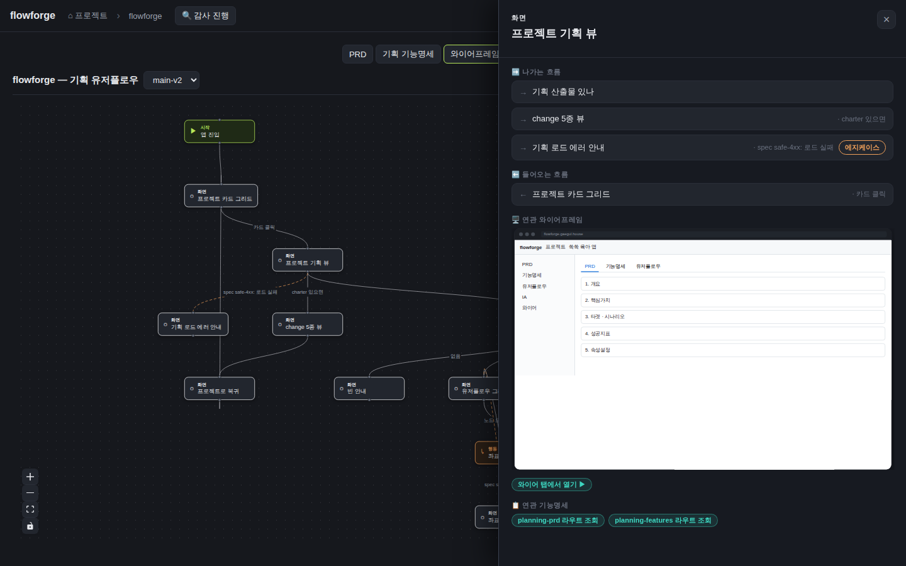
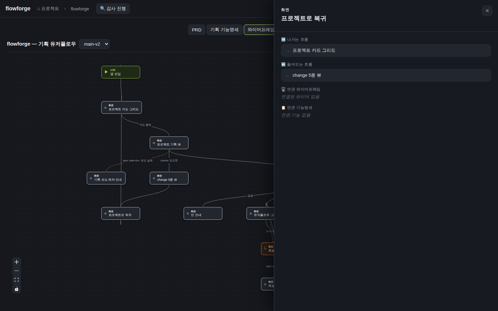
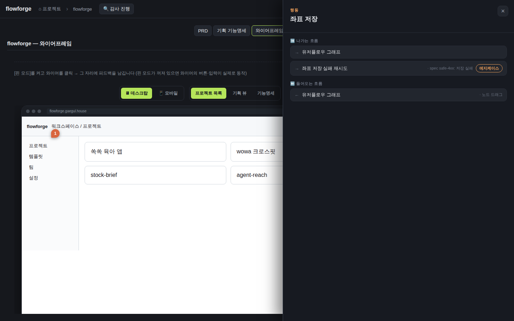

검증일: 2026-07-12T15:15:00+09:00 · 환경: server(jest) 적용 — planningUserFlowBuilder screenId 파생 실행. web(vitest+jsdom) 적용 — screenCrosslink 헬퍼 + FlowDetailPanel 렌더. web-live(gstack browse) 적용 — flowforge.gaegul.house 실픽셀 클릭 관찰. android/ios SKIPPED(적용 불가: 웹 SPA 프로젝트, 네이티브 레이어 없음). · run: run-20260712-1515 · commit 6197da27 (dirty)
PASS 7 · FAIL 0 · 검증 안 함 0 · SKIPPED 0
| Requirement | Scenario | Layer | 검증 수단 | 탐지 근거(basis) | 결과 | 증거 |
|---|---|---|---|---|---|---|
| 유저플로우 화면 노드에서 연관 와이어프레임을 상호참조한다 | 화면 노드 선택 시 연관 와이어 프리뷰 표시 | web | gstack browse 실픽셀 — flowforge 프로젝트 유저플로우 탭에서 화면 노드 'skeleton'(프로젝트 기획 뷰) 클릭 → 상세 패널에 '🖥️ 연관 와이어프레임' 섹션 + WireframeDeviceFrame 라이브 프리뷰(wf-df-desktop) 렌더 실관찰. DOM assert: wireSection=true, deviceFrame=true. jsdom C.1 테스트 병행(wf-df-desktop 존재). | 라이브 https://flowforge.gaegul.house / DOM testid flow-detail-wire · wf-df-desktop. 스크린샷 vxl-06-skeleton-features.png | ✓ PASS |  |
| 유저플로우 화면 노드에서 연관 와이어프레임을 상호참조한다 | 흐름 섹션과 병존 | web | gstack browse 실픽셀 — 같은 skeleton/grid 화면 노드 패널에서 기존 '나가는 흐름'·'들어오는 흐름' 섹션이 상호참조 섹션 위에 그대로 유지됨을 실관찰(회귀 0). jsdom 테스트 '흐름 섹션은 화면 노드에서도 그대로 병존한다' 병행. | 라이브 스크린샷 vxl-06-skeleton-features.png(나가는/들어오는 흐름 + 연관 와이어 + 연관 기능 동시 렌더) / vitest FlowDetailPanel.test.tsx | ✓ PASS | |
| 유저플로우 화면 노드에서 연관 기능명세 상세기능을 역조회한다 | 화면 노드 선택 시 연관 상세기능 목록 표시 | web | gstack browse 실픽셀 — skeleton 화면 노드 클릭 → '📋 연관 기능명세' 섹션에 상세기능 라벨 칩 2개('planning-prd 라우트 조회', 'planning-features 라우트 조회') 렌더 실관찰. 라이브 registry.links(skeleton→2건)와 정확 일치. DOM assert: badges=['planning-prd 라우트 조회','planning-features 라우트 조회']. screenCrosslink.test.ts B.1 역인덱스 8테스트 병행. | 라이브 https://flowforge.gaegul.house · /api/docs/flowforge/planning-screens links 대조 / DOM testid flow-detail-features. 스크린샷 vxl-06-skeleton-features.png | ✓ PASS | |
| 유저플로우 화면 노드에서 연관 기능명세 상세기능을 역조회한다 | 상세기능 항목에서 기능명세로 딥링크(선택 시) | web | gstack browse 실픽셀 — 연관 기능명세 칩이 enabled(disabled=false)이고 onSelectFeatureLabel 콜백이 배선되어 클릭 가능함을 실관찰(chipDisabled=false). spec은 '라벨 표시 필수, 딥링크 선택' — 라벨 식별(필수)이 명확히 충족됨. jsdom C.1에서 칩 라벨 렌더 확인 병행. | 라이브 DOM — flow-detail-features button.disabled=false, 라벨 텍스트 표시 확인 / FlowDetailPanel.tsx:219-231 (onSelectFeatureLabel 배선). 스크린샷 vxl-06-skeleton-features.png | ✓ PASS | |
| 연결이 없거나 화면 노드가 아니면 빈 상태로 안전 처리한다 | 화면 id 매칭 0개 | web | gstack browse 실픽셀 — 화면 노드 'back'(프로젝트로 복귀, 와이어·링크 어디에도 없는 screenId) 클릭 → '연결된 와이어 없음' + '연관 기능 없음' 빈 상태 렌더, 그래프 13노드 alive(무크래시) 실관찰. jsdom E.2 테스트 병행. | 라이브 스크린샷 vxl-10-screen-0match-back.png · DOM wireText='연결된 와이어 없음' featText='연관 기능 없음' graphAlive=13 / console --errors: 앱 에러 0(Cloudflare beacon CSP만, 무관) | ✓ PASS |  |
| 연결이 없거나 화면 노드가 아니면 빈 상태로 안전 처리한다 | 화면 종류가 아닌 노드(시작/섹션/행동) | web | gstack browse 실픽셀 — 행동(action) 노드 'save'(좌표 저장) 클릭 → 상호참조 섹션(와이어/기능) 미노출(wireSection=false, featuresSection=false), 흐름 섹션만 렌더(hasFlowSection=true) 실관찰. FlowDetailPanel.tsx:188 isScreen 가드로 보장. jsdom E.1 테스트 병행. | 라이브 스크린샷 vxl-07-action-node.png · DOM wireSection=false featuresSection=false hasFlowSection=true / FlowDetailPanel.tsx:109,188 (isScreen 가드) | ✓ PASS |  |
| 연결이 없거나 화면 노드가 아니면 빈 상태로 안전 처리한다 | dangling 화면 id | web | gstack browse 실픽셀 — 화면 노드 'back'의 screenId가 screenRegistry·planningWireScreens 어디에도 없는 dangling 값인데도 id를 숨기지 않고 빈 상태로 크래시 없이 렌더 실관찰(0매칭 케이스와 동형 — back의 screenId=back이 wire ids[grid,features,skeleton]·links[skeleton,features]에 부재). jsdom E.3 테스트(screenId='ghost') 병행 — wireForScreen/detailLabelsForScreen이 dangling→null/[] 반환. | 라이브 스크린샷 vxl-10-screen-0match-back.png · DOM 빈 상태 렌더 graphAlive=13 / screenCrosslink.test.ts 'dangling → null' + FlowDetailPanel.test.tsx E.3 | ✓ PASS |
| Requirement | null | 빈값 | 잘못된타입 | 경계값 | 에러경로 | 동시성 | 대량 | 특수문자 | 판정 |
|---|---|---|---|---|---|---|---|---|---|
| 유저플로우 화면 노드에서 연관 와이어프레임을 상호참조한다 | ✓ | ✓ | N/A | ✓ | ✓ | N/A | N/A | N/A | ✓ 충분 |
| 유저플로우 화면 노드에서 연관 기능명세 상세기능을 역조회한다 | ✓ | ✓ | N/A | ✓ | ✓ | N/A | N/A | N/A | ✓ 충분 |
| 연결이 없거나 화면 노드가 아니면 빈 상태로 안전 처리한다 | ✓ | ✓ | ✓ | ✓ | ✓ | N/A | N/A | N/A | ✓ 충분 |
✓=covered · N/A=해당없음(사유 hover) · ✗=missing. happy-path만이면 검증 불충분 → 최종 FAIL 차단.
| Layer | 상태 | ran | passed | failed | 근거/사유 |
|---|---|---|---|---|---|
| server | ✓ PASS | 12 | 12 | 0 | jest src/parser/__tests__/planningUserFlowBuilder.test.ts — screenId 파생 케이스(화면 노드=바레 screenId, 시작/행동=undefined) 포함 12 passed, exit 0. 라이브 /api/docs/flowforge/planning-user-flow 재조회로 screenId 파생 실측(screen 10노드 모두 screenId 있음, start/action 3노드 screenId=None). |
| web | ✓ PASS | 13 | 13 | 0 | vitest — screenCrosslink.test.ts 8 passed(B.1/B.2 헬퍼: 역인덱스·와이어 lookup·매칭0·dangling·빈/미제공) + FlowDetailPanel.test.tsx 5 passed(C.1 happy·E.1 화면아님·E.2 0개·E.3 dangling·흐름 병존, jsdom). exit 0. 추가로 gstack browse 라이브 실픽셀 5시나리오 실관찰(vxl-06/07/10 스크린샷). |
| android | – SKIPPED | 0 | 0 | 0 | 적용 불가(웹 SPA, 네이티브 레이어 없음) |
| ios | – SKIPPED | 0 | 0 | 0 | 적용 불가(웹 SPA, 네이티브 레이어 없음) |
✓ PASS 통과
archiveGate.open = true (PASS일 때만 true). verify.json이 이 값을 archive 게이트에 전달.
{kind=link}
{kind=link}
{kind=link}